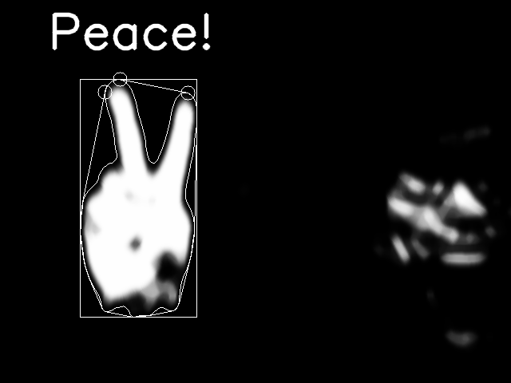
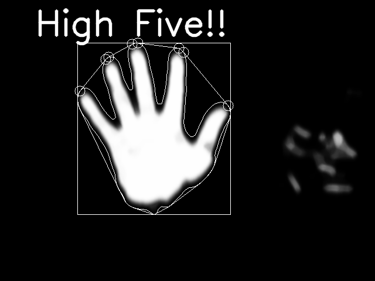
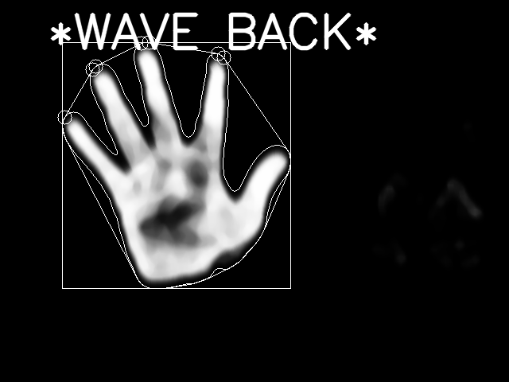
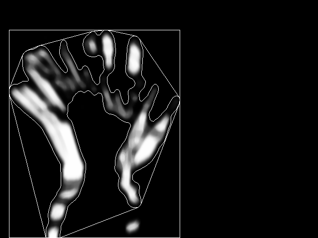

Problem Definition
In this programming assignment, we are asked to design and implement algorithms that recognize at least 3 hand shapes (such as making a fist, thumbs up, thumbs down, pointing with an index finger etc.) or gestures (such as waving with one or both hands, swinging, drawing something in the air etc.) and create a graphical display that responds to the recognition of the hand shapes or gestures. In the three shapes/gestures, there must be at least one dynamic gesture (movement such as waving) and at least one static (such as pointing).
This is useful because gesture recognition provides a means of sending information to a program via movement rather than physical interaction with the program. It opens up areas of research with human emotions/actions as well as an area of research for creating artificial intelligence which can recognize and mimic human gestures. One foreseeable difficulty is using size as an input for classification. The reason is because size can vary greatly depending on the distance from the camera.
Method and Implementation
For this program, we were able to detect 3 hand gestures: a wave, a high-five, and a peace sign.
Overall, the high-five and peace gestures are detected using finger recognition. This is with the help of Abner Matheus, who walked through the steps of detecting finger tips. Then, based on the number of corners (fingers), the program makes a decision on whether the gesture is a high-five, a peace sign, or neither. For the wave, the finger recognition algorithm is used for 4 frames in a motion history detection. If the hand (in four different positions) generates a sufficiently large area, and has 4-5 fingers raised during each frame, then the program decides that it is a wave.
Functions/Algorithms
- Background Detection and Removal
- Uses KNN learning to determine background, then use background as a mask for new frames.
- Skin Detection
- Uses RGB values to determine skin color, outputting a white pixel if it is considered skin and a black if not. This is combined with the Background Detection and Removal algorithm as a mask to only consider non-background skin-colored objects.
- Blurring
- Use median blurring and gaussian blurring to remove small black patches within the hand. This will help with contour and hull detection as long as rectangle wrapping.
- Contour, Hull, and Rectangle Wrap
- Here, we used some help again from Abner Matheus, and detected the contours and hull around the largest skin object. This allows us to calculate a rough area for our detected object as well as a rough shape.
- Finger Tip Detection and Static Recognition
- Using the previous function's output, if the size of the non-background skin-colored object is large enough, detect fingertips using angles and length (again with help from Abner Matheus). Depending on the number of tips, the gesture would be classified as either peace or high-five (5 fingers vs 2 fingers).
- Motion History and Dynamic Recognotion
- This detects the 4 most recent frames and then sums their images into one. If the area of the object generated exceeds a certain threshold, and if the 4 frames have been recognizing an open hand with 4-5 fingers, then this is a wave.
Experiments
For the experiment, I tested the program about 20 times per gesture (none, wave, peace, and high-5). I then created a confusion matrix for each of them. It is good to note that the test is not optimal because of slightly poor backgrounds and the program's inability to stop between tests. The result for a test is done to the best of my ability.
Results
Sample Gestures
Peace
High-Five
Wave
Wave Motion History
Confusion Matrix

Discussion
Some of the strengths of our method is that the background detection and removal does a good job at removing noise. However, the issue with our implementation is that the hand waving detection relies on the high-five gesture and movement to generate a larger area to meet a threshold. Because the threshold is a fixed number based on size, if the hand is closer to the camera, a high-five can trigger a hand-waving gesture. Additionally, because the finger tips are determined based on angles and length, rather than shape comparison, random blobs like face will occasionally detect finger tips and register a gesture.
Nonetheless, our results were generally good, functioning as expected. Some areas of improvement are to include shape comparison with pre-created hand images; this will remove a lot of false positives. Additionally, using a different method rather than measuring solely area for dynamic gesture recognition will probably improve the waving gesture results.
Conclusions
Overall, the conclusion is that gesture detection is a multi-step process which can be refined using blurring, skin detection, and motion detection. We successfully implemented the gestures with relatively decent success rates.
Credits and Bibliography
Abner Matheus: https://picoledelimao.github.io/blog/2015/11/15/fingertip-detection-on-opencv/'
My teammates: Nick Mauro and Michael Deng.